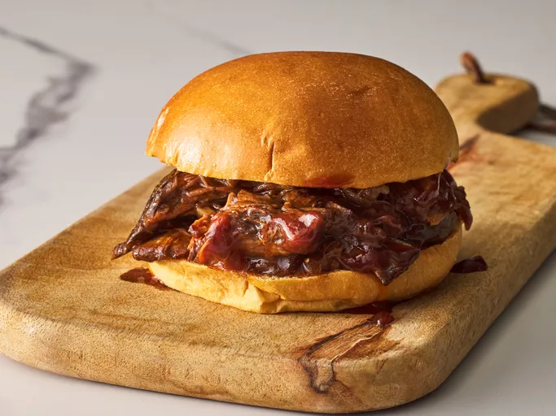
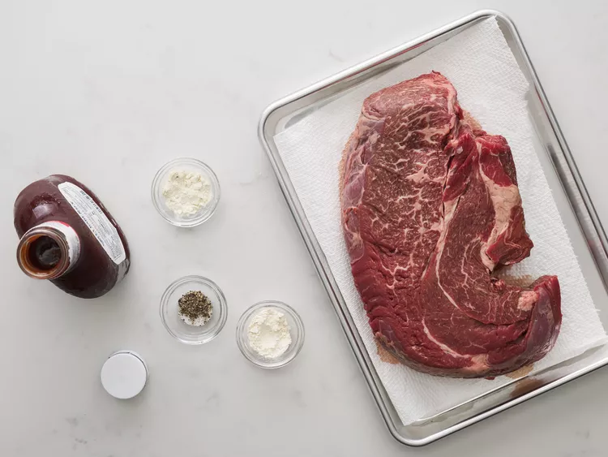
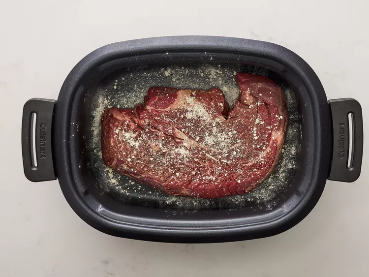
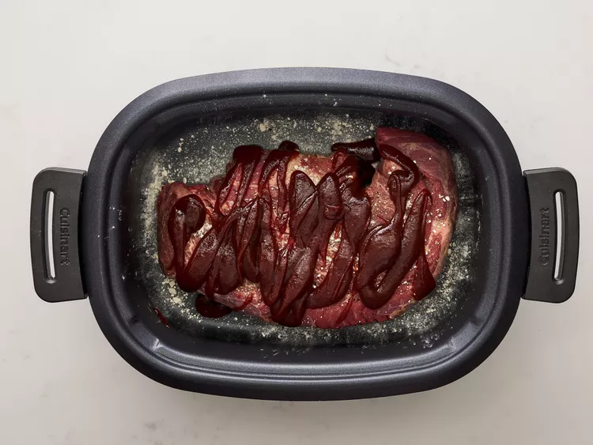
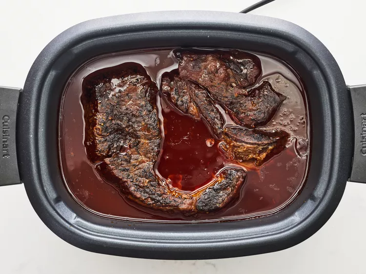
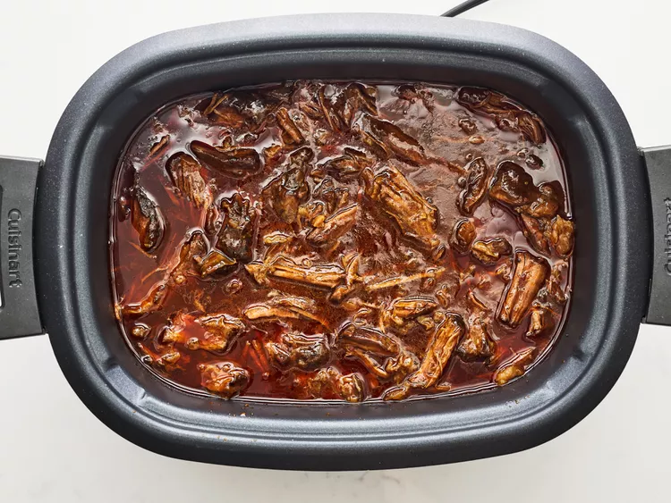

Home
Slow Cooker Barbeque:

This slow cooker BBQ beef is an old recipe that makers mom used to make for them when they were kids. It is so
good it almost melts in your
mouth! Serve on sub rolls.
Credit goes to Brandy (allrecipes.com)
ingredients:
- 1 (3 pound) boneless chuck roast
- 1 teaspoon garlic powder
- 1 teaspoon onion powder
- salt and pepper to taste
- 1 (18 ounce) bottle barbeque sauce
Steps:
- Gather all ingredients.

- Place roast into slow cooker. Sprinkle with garlic powder and onion powder. Season with salt and pepper.

- Pour barbeque sauce over meat.

- Cook on Low for 6 to 8 hours.

- Remove meat from slow cooker, shred, and return to slow cooker. Cook for 1 more hour.

- Serve hot. Enjoy!